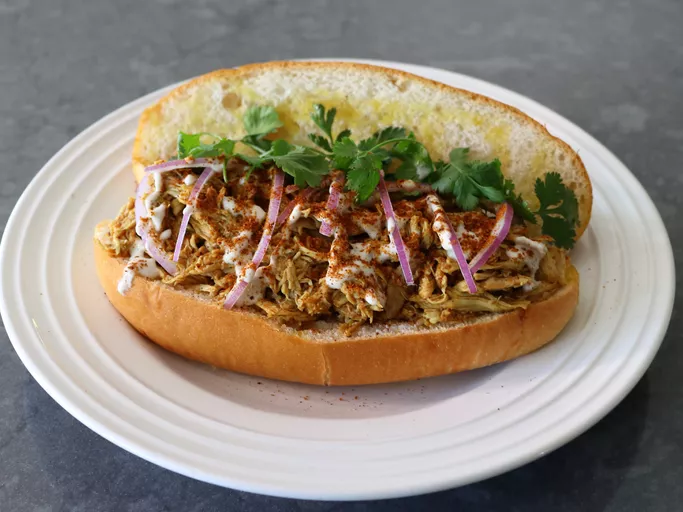

Shawarma

Description
This pulled chicken shawarma sandwich has the same
fab texture as pulled pork, and the extremely
delicious shawarma spice mix plus a rich,
reduced, seasoned broth make it nothing short
of amazing. Serve on toasted sandwich rolls,
with thinly sliced red onions, fresh cilantro,
tahini or a yogurt sauce,
and maybe a squeeze more fresh lemon juice.
Ingredients
- 2 teaspoons kosher salt
- 2 tablespoons ground cumin
- 1 tablespoon sumac
- 2 teaspoons smoked paprika
- 2 teaspoons chili powder
- 1 teaspoon ground black pepper
- 1 teaspoon garlic powder
- 1 teaspoon ground turmeric
- 1/4 teaspoon ground cloves
- 1/4 teaspoon cayenne pepper
- 1 teaspoon ground cinnamon
Steps
- For shawarma spice mix, add salt,
cumin, sumac, paprika, chili powder,
black pepper, garlic powder, turmeric, cloves, cayenne,
and cinnamon to a small bowl and stir together.
- Place chicken in a soup pot, breast side up,
and add 1 quart cold water
along with garlic, onions, and half
the spice mix.
- Place pot over high heat and bring to boil.
Reduce heat to low, cover, and simmer gently
for 1 hour, turning
chicken over every 20 minutes.